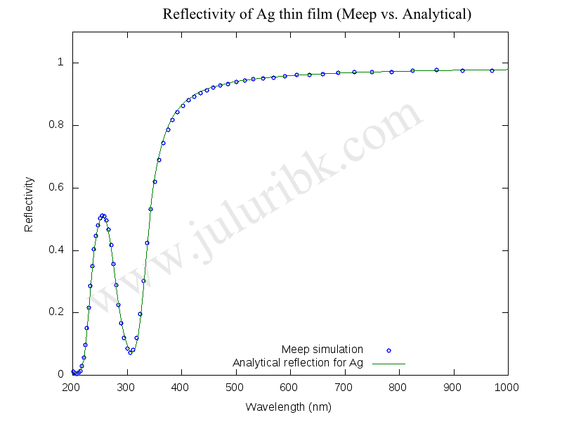

Plasmonic materials in MEEP
Posted on Wed 27 April 2011 in Plasmonics
[latexpage]
The aim of this post is to share my experience in incorporating dielectric function of metals such as gold and silver into MEEP (a free finite difference time domain package) code. The incorporation is not an easy task and can be daunting for the first time user.
Metals such as gold and silver have both Drude and Lorentz components for the dielectric function. There are many forms of Lorentz-Drude expressions in literature with slight notation differences.
I prefer the Lorentz-Drude expression mentioned in Rakic et al., Optical properties of metallic films for vertical-cavity optoelectronic devices, Applied Optics (1998) and is given by:
\\(\\epsilon(\\omega)=1-\\frac{f\_1\\omega\_p'\^2}{(\\omega\^2+i\\Gamma\_1'\\omega)}+\\sum\_{j=2}\^{n}\\frac{f\_j\\omega\_p'\^2}{(\\omega\_{o,j}'\^2-\\omega\^2-i\\Gamma\_j'\\omega)}\\).
I took it as reference as they also give the parameters for metals such as Ag and Au and these models fit decently well to experimental data over a larger frequency range (0.1 eV to 6 eV).
For Silver, the parameters are :
\\(\\omega\_p\\) = 9.01;% Plasma frequency in eV
f = [0.845 0.065 0.124 0.011 0.840 5.646];% Oscillators' strengths
\\(\\Gamma\\) = [0.048 3.886 0.452 0.065 0.916 2.419];% Damping frequency of each oscillator in eV
\\(\\omega\_o\\) = [0.000 0.816 4.481 8.185 9.083 20.29];% Resonant frequency of each oscillator in eV
For Gold, the parameters are :
\\(\\omega\_p\\) = 9.03;% Plasma frequency in eV
f = [0.760 0.024 0.010 0.071 0.601 4.384];% Oscillators' strengths
\\(\\Gamma\\) = [0.053 0.241 0.345 0.870 2.494 2.214];% Damping frequency of each oscillator in eV
\\(\\omega\_o\\) = [0.000 0.415 0.830 2.969 4.304 13.32];% Resonant frequency of each oscillator in eV
To convert these parameters usable for MEEP codes, one needs to do the following:
1) Normalization:
\\(\\omega\_p'=\\omega\_p \\times \\textrm{norm}\\),
\\(\\Gamma'=\\Gamma \\times \\textrm{norm}\\),
\\(\\omega\_o'=\\omega\_o \\times \\textrm{norm}\\),
where \\(\\textrm{norm}=\\frac{ev2w}{\\frac{2\\pi c}{a}}\\), \\(ev2w=\\frac{2\\pi}{4.135666e-15}\\) .
Essentially, we are converting the units of \\(\\omega\_p\\),\\(\\Gamma\\) and \\(\\omega\_o\\) from eV to angular frequency, which is done by multiplying them with \\(ev2w\\). Further, they need to be normalized to MEEP units, divide by \\(\\frac{2\\pi c}{a}\\), where \\(a\\) is the length unit in meters used in your MEEP code and obviously c is 299792458 m/s.
2) Casting Lorentz-Drude model to MEEP's model
Current version of MEEP (1.1.1), supports dispersive materials through Lorentz model and is given by:
\\( \\epsilon(\\omega)=\\epsilon\_{\\infty}+\\sum\_{j=1}\^{n}\\frac{\\sigma\_{L,j}\\omega\_{L,j}\^2} {(\\omega\_{L,j}\^2-\\omega\^2-i\\Gamma\_{L,j}\\omega)}\\).
The normalized parameters, \\(\\omega\_p'\\),\\(\\Gamma'\\) and \\(\\omega\_o'\\) from step 1, need to be cast into the MEEP's dispersive materials model by the following modifications:
1) \\(\\omega\_{L,1}=1e\^{-20}\\) (Any small number should be fine.)
2) \\(\\omega\_{L,j>1}=\\omega\_{o,j>1}'\\)
3) \\(\\sigma\_{L,j}=\\frac{f\_j\\omega\_p'\^2}{\\omega\_{L,j}\^2}\\)
4) \\(\\epsilon\_{\\infty}=1\\)
5) \\(\\Gamma\_{L,j}=\\Gamma\_j'\\)
Here is scheme code snippet for silver with a=100e-9m (100 nm) after normalization and casting them into MEEP's material model.
1 2 3 4 5 6 7 8 9 10 11 12 13 14 15 | |
The first polarizability is the Drude component and the rest 5 polarzabilities represent the Lorentz components. I have used this snippet in a MEEP code that calculates the reflection from a thin film of silver (to be consistent, all my units in this MEEP code are also normalized to 100 nm). Later I compared the reflection spectra with an analytical solution. These results are shown below. The MEEP calculation results match very well the analytical solutions. One can also clearly see the Ag interband effects in UV regime. The results also match with an other reference.
{kind=link}
If anyone needs the codes that generate the scheme snippet for material polarization and calculation of reflectivity of thin metal films, please shoot me an email.
Reflectivity comparision between MEEP and analytical model for Silver

[You can find my project file here. Please read the readme.txt for further instructions.]
[UPDATE:] Aaron Webster used this code for a 1 × 1 × 1 pixel region and epilion was exported with the command meep-fields-analytic-chi1. He showed that the dielectric function seen by meep through using my snippet matches with the experimental dielectric function. You can find his report here. Thank you Aaron.
Majid has written a python code to do the operation described above. Please find it here